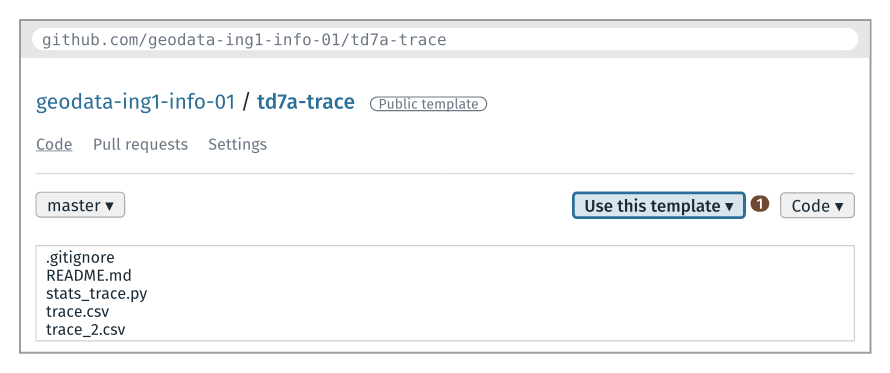
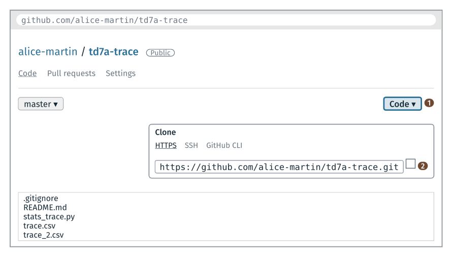
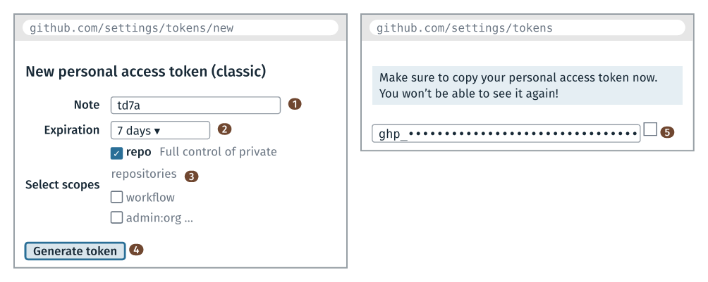
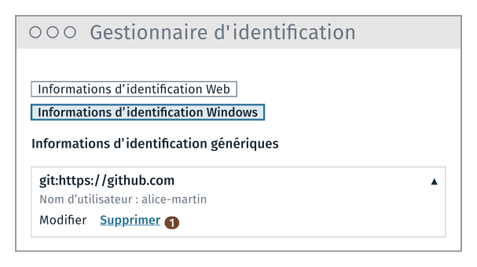
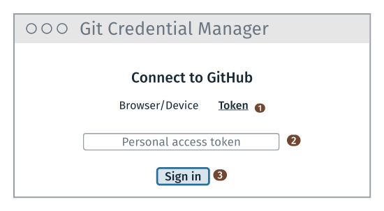
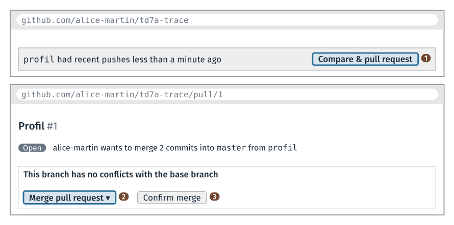

TD 7a — Une pull request sur son dépôt GitHub#
Note
Les fichiers des TD de la séance sont dans l’archive info01-cours7.zip.
Ce guide a quatre parties. La présentation décrit le programme à compléter, les deux dépôts du TD et leurs adresses. L’énoncé donne, pour chaque étape, l’objectif, les consignes et le test de fin d’étape. Le dépannage donne la cause et la solution des messages d’erreur du premier push. Les solutions donnent le code de l’étape 3, expliquent ce que font les commandes git, et donnent ce que le TD fait constater.
Le code de ce guide se copie depuis guide_7a_trace.html, ouvert dans un navigateur,
ou depuis guide.ipynb, ouvert dans JupyterLab. Copié depuis le PDF, il perd ses
indentations.
Présentation du TD#
Objectif du TD#
Le programme#
Le TD part de stats_trace.py, le programme de la fin du TD 4a. Il lit une trace GPS
dans un fichier CSV, puis affiche ses altitudes extrêmes, son dénivelé cumulé et, avec
les options --distance et --vitesse, la distance parcourue et la vitesse moyenne.
Le TD lui ajoute l’option --profil, qui écrit le profil de la trace dans
profil.csv : à chaque position, la distance parcourue depuis le départ, puis
l’altitude. À la fin du TD, le programme affiche :
$ python stats_trace.py trace.csv --profil
altitude minimale : 78.8 m
altitude maximale : 129.5 m
max - min : 50.7 m
cumul en hausse : 98.4 m
cumul en baisse : 50.3 m
profil : profil.csv, 60 positions
et profil.csv commence et finit ainsi :
distance,altitude
0.0,79.6
18.8,78.8
63.4,79.9
…
1866.5,128.4
1906.7,127.7
La dernière distance est la distance parcourue, calculée au TD 4a. Dans un tableur, un graphique en nuage de points sur les deux colonnes donne la courbe de l’altitude selon la distance.
Le travail sur le code est court. Le TD porte surtout sur GitHub : copier un dépôt, le cloner, envoyer une branche, puis la fusionner par une pull request.
Les deux dépôts du TD#
Le module publie un dépôt modèle, td7a-trace, sur son compte GitHub,
geodata-ing1-info-01. Un dépôt modèle se copie sur son propre compte par le bouton
« Use this template » de sa page. À l’étape 1, chacun crée ainsi son dépôt
td7a-trace, sur son compte : tout le TD se fait dans ce dépôt.
Dépôt |
Adresse |
|---|---|
modèle du module, à ouvrir dans le navigateur |
|
votre dépôt, dans le navigateur |
|
votre dépôt, pour |
|
Dans ce guide, <compte> désigne le nom de votre compte GitHub, à mettre à la place
de <compte> partout où il apparaît. Les exemples emploient le compte alice-martin.
Toutes les adresses commencent par https://. GitHub donne aussi des adresses en
git@github.com:…, sous l’onglet SSH du bouton Code. Elles passent par le port 22,
que le pare-feu de l’école ferme : dans la salle, git clone et git push échouent
avec ces adresses.
Les étapes#
Le TD dure 85 minutes. Il compte un seul push et une seule pull request. L’étape 6, facultative, ajoute un second push.
Énoncé |
Objectif |
Commits |
Push |
Solution |
|---|---|---|---|---|
copier le dépôt modèle sur son compte GitHub |
0 |
0 |
||
cloner son dépôt en HTTPS, puis lancer le programme |
0 |
0 |
||
ajouter l’option |
2 |
0 |
||
créer un token, puis envoyer la branche sur GitHub |
0 |
1 |
||
fusionner la branche par une pull request |
0 |
0 |
||
Étape 6 (facultative) |
décrire l’option dans le README, puis l’envoyer |
1 |
1 |
Compte GitHub#
Créer son compte GitHub avant la séance, hors du réseau de l’école (fin du cours 5).
Garder près de soi le téléphone qui donne les codes du deuxième facteur.
Les notions employées#
Notion |
Vue au |
Employée aux étapes |
|---|---|---|
un dépôt sur GitHub, |
cours 6 |
1 et 2 |
une branche, un commit |
cours 2 |
3 |
une liste de tuples, une fonction, une option |
TD 4a |
3 |
l’écriture d’un fichier texte |
cours 3 |
3 |
un token d’accès |
cours 6 |
4 |
une pull request, |
cours 6 |
5 |
Énoncé#
Étape 1 · Copie du dépôt modèle#
Objectif : créer sur son compte GitHub le dépôt
td7a-trace, copie du dépôt modèle du module.

Consignes
Se connecter à GitHub, puis ouvrir
https://github.com/geodata-ing1-info-01/td7a-trace.Cliquer sur « Use this template » (repère 1), puis sur « Create a new repository ».
Dans le formulaire : Owner, son compte ; Repository name,
td7a-trace; laisser « Public » coché.Cliquer sur « Create repository ».
Test
La page de son dépôt s’ouvre, à l’adresse github.com/<compte>/td7a-trace. Elle
affiche les cinq fichiers du dépôt modèle et un seul commit, « Initial commit ».
Étape 2 · Clone du dépôt#
Objectif : copier son dépôt dans
cours7/7a_trace/travail/, avec son adresse HTTPS, puis lancer le programme dans VS Code.
Étape 2 · Clone en HTTPS#

Consignes
Copier l’archive
info01-cours7.zipdeformationTempdans le dossierinfo01du Bureau.Ouvrir Git Bash depuis le menu Démarrer.
Aller dans le dossier
~/Desktop/info01, puis décompresser l’archive :cd ~/Desktop/info01 unzip info01-cours7.zip
Aller dans le dossier
travaildu TD :cd cours7/7a_trace/travail
Sur la page de son dépôt, cliquer sur Code (repère 1), choisir l’onglet HTTPS, puis copier l’adresse avec le bouton à droite de l’adresse (repère 2).
Taper
git clone, puis coller l’adresse, avec un clic droit, Paste, ou avec Maj + Inser, puis Entrée. Pour le comptealice-martin:git clone https://github.com/alice-martin/td7a-trace.git
Test
Git affiche Clonage dans 'td7a-trace'..., puis quelques lignes remote:, et le
dossier travail/td7a-trace/ contient les fichiers du dépôt.
Si git clone affiche Repository not found, <compte> n’a pas été remplacé ou le
nom du dépôt diffère : comparer l’adresse à celle de la barre d’adresse du navigateur.
Étape 2 · Projet dans VS Code#
Consignes
Ouvrir le dossier du clone dans VS Code : menu File, Open Folder…,
Desktop\info01\cours7\7a_trace\travail\td7a-trace.Ouvrir un terminal (menu Terminal, New Terminal), puis indiquer son identité pour ce dépôt :
git config user.name "Prénom Nom" git config user.email prenom.nom@ensg.eu
Lancer le programme :
python stats_trace.py trace.csv --distance
Test
$ python stats_trace.py trace.csv --distance
altitude minimale : 78.8 m
altitude maximale : 129.5 m
max - min : 50.7 m
cumul en hausse : 98.4 m
cumul en baisse : 50.3 m
distance parcourue : 1906.7 m
Solution : étape 2.
Étape 3 · Branche profil#
Objectif : sur une branche
profil, ajouter l’option--profil, qui écritprofil.csv, en deux commits : l’option, puis le calcul.
L’étape suit l’ordre du TD 4a : d’abord l’option, avec un message à la place du calcul, puis le calcul.
Étape 3 · Option –profil#
Consignes
Créer la branche et y passer :
git checkout -b profil.Sous la déclaration de l’option
--vitesse, déclarer l’option--profil, avec le texte d’aideécrit le profil altimétrique dans profil.csv.Dans la boucle de lecture, ajouter
or options.profilà la conditionif options.distance or options.vitesse:: le profil a besoin des positions.À la fin du fichier, ajouter le bloc
if options.profil:, qui afficheprofil : calcul manquant.Enregistrer le fichier, puis lancer
python stats_trace.py trace.csv --profil.
Test
La sortie se termine par profil : calcul manquant.
Commit
git add stats_trace.py
git commit -m "L'option --profil"
Étape 3 · Écriture du profil#
Consignes
Sous la fonction
distance_parcourue, écrire la fonctionprofil(points). Elle renvoie la liste des tuples(distance cumulée, altitude), un par position, en partant du tuple(0, altitude de la position 0).Dans le bloc
if options.profil:, remplacer le message par l’écriture du fichierprofil.csv: la lignedistance,altitude, puis une ligne par tuple, la distance avec un chiffre après la virgule.Afficher
profil : profil.csv,, suivi du nombre de positions.Ajouter une ligne
profil.csvà la fin de.gitignore: le fichier est refait à chaque lancement.Enregistrer les fichiers, lancer
python stats_trace.py trace.csv --profil, puis ouvrirprofil.csvdans VS Code.
Test
La sortie se termine par profil : profil.csv, 60 positions, et profil.csv commence
par 0.0,79.6 et finit par 1906.7,127.7.
Commit
git add stats_trace.py .gitignore
git commit -m "Le profil altimétrique"
git log --oneline affiche trois commits : les deux de la branche, puis « Initial
commit ».
Solution : étape 3.
Étape 4 · Premier push#
Objectif : créer un token, puis envoyer la branche
profilsur GitHub, en donnant le token quand Git le demande.
Le premier push vers GitHub demande de s’identifier. GitHub n’accepte pas le mot de
passe du compte pour git push : il demande un token, une chaîne qu’il génère, à
coller à la place du mot de passe (cours 6, « Accès à GitHub par token »).
Selon le choix de l’enseignant, Git demande le token dans la fenêtre de Git Credential Manager, le gestionnaire d’identifiants installé avec Git for Windows, ou par deux questions posées dans la fenêtre Git Bash, Git Credential Manager retiré du dépôt.
Étape 4 · Création du token#

Ouvrir le formulaire : menu du compte (en haut à droite), Settings, Developer settings (en bas de la liste de gauche), Personal access tokens, Tokens (classic), puis Generate new token (classic). GitHub peut redemander le code du deuxième facteur.
Note :
td7a(repère 1). Expiration : 7 days (repère 2). Cocherrepo(repère 3).Cliquer sur « Generate token » (repère 4), en bas de la page.
Copier le token avec le bouton à sa droite (repère 5), puis le coller dans un nouveau fichier de Notepad++, sans l’enregistrer. GitHub ne l’affiche qu’une fois.
Étape 4 · Push par la fenêtre de connexion#
Git Credential Manager garde le token dans le Gestionnaire d’identification de
Windows, pour le compte Windows ouvert. Si un autre compte GitHub a déjà poussé depuis
le poste, son identifiant y est resté : Git Credential Manager le donnerait à GitHub
sans rien demander, et le push échouerait (Permission … denied to …). Avant le
push, supprimer cet identifiant (consignes 1 à 3).

Ouvrir le Gestionnaire d’identification : menu Démarrer, taper « Gestionnaire d’identification », puis Entrée.
Cliquer sur « Informations d’identification Windows ».
Sous « Informations d’identification génériques », chercher
git:https://github.com. S’il existe, le déplier, puis cliquer sur « Supprimer » (repère 1).Dans le terminal de VS Code, envoyer la branche :
git push -u origin profil
La fenêtre « Connect to GitHub » s’ouvre. Si elle n’apparaît pas, la chercher dans la barre des tâches : elle peut s’ouvrir derrière VS Code.
Dans cette fenêtre, cliquer sur l’onglet Token (repère 1 de l’image ci-dessous).
Coller le token dans le champ (repère 2), avec Ctrl + V.
Cliquer sur « Sign in » (repère 3).

Aux pushs suivants, Git ne demande plus rien : Windows a gardé le token.
Étape 4 · Push par le terminal#
La fenêtre Git Bash est nécessaire : dans le terminal de VS Code, VS Code prend à son compte les questions de Git, et les affiche dans une boîte en haut de sa fenêtre, ou propose une connexion à GitHub. Avec Git Credential Manager, Git ne pose pas ces questions : Git Credential Manager ouvre sa propre fenêtre, même depuis le terminal de VS Code.
Si la fenêtre Git Bash de l’étape 2 est fermée, en ouvrir une depuis le menu Démarrer. Dans cette fenêtre, aller dans le dossier du clone :
cd ~/Desktop/info01/cours7/7a_trace/travail/td7a-trace
Retirer Git Credential Manager de ce dépôt :
git config credential.helper ""
Sans
--global, la commande ne vaut que pour ce dépôt. Git pose alors ses questions dans le terminal, et ne garde pas le token.Envoyer la branche :
git push -u origin profil. Git afficheUsername for 'https://github.com':.Taper le nom de son compte GitHub, puis Entrée. Le nom du compte figure dans l’adresse de son dépôt,
github.com/<compte>/td7a-trace, et en haut du menu de l’icône du compte, en haut à droite de GitHub. GitHub ne le vérifie pas : seul le token compte. Git affiche ensuitePassword for 'https://<compte>@github.com':.Coller le token avec Maj + Inser, ou par un clic droit puis Paste, puis taper Entrée. Rien ne s’affiche pendant la saisie, ni le token ni des étoiles. Ctrl + V peut ne pas coller dans Git Bash.
$ git push -u origin profil
Username for 'https://github.com': alice-martin
Password for 'https://alice-martin@github.com':
Git repose les deux questions à chaque push : garder ouvert le fichier de Notepad++ où le token est collé, jusqu’à la fin du TD.
Test#
…
remote: Create a pull request for 'profil' on GitHub by visiting:
remote: https://github.com/alice-martin/td7a-trace/pull/new/profil
To https://github.com/alice-martin/td7a-trace.git
* [new branch] profil -> profil
la branche 'profil' est paramétrée pour suivre 'origin/profil'.
Les lignes remote: viennent de GitHub.
Si un message d’erreur s’affiche, la partie Dépannage du premier push donne sa cause et sa solution.
Solution : étape 4.
Étape 5 · Pull request et fusion#
Objectif : fusionner la branche
profildansmastersur GitHub, par une pull request, puis ramener la fusion sur le poste.

Consignes
Ouvrir la page de son dépôt. Dans le bandeau qui signale le push de
profil, cliquer sur « Compare & pull request » (repère 1), puis sur « Create pull request ».Sur la page de la pull request, cliquer sur « Merge pull request » (repère 2), puis sur « Confirm merge » (repère 3).
Dans le terminal de VS Code, revenir sur
master, puis ramener la fusion :git checkout master git pull
Afficher le graphe du dépôt :
git log --oneline --graph.
Test
git pull affiche Fast-forward, puis les deux fichiers modifiés, et le graphe montre
le commit de fusion écrit par GitHub :
* f58602e Merge pull request #1 from alice-martin/profil
|\
| * fa52c72 Le profil altimétrique
| * f3484f4 L'option --profil
|/
* 88b09fe Initial commit
Les identifiants des commits diffèrent d’un dépôt à l’autre.
Solution : étape 5.
Étape 6 (facultative) · README et second push#
Objectif : ajouter l’option
--profilau tableau des options deREADME.md, surmaster, puis envoyer ce commit sur GitHub.
Consignes
Dans
README.md, ajouter au tableau des options la ligne| `--profil` | écrit le profil altimétrique dans profil.csv |.Faire le commit :
git add README.md git commit -m "L'option --profil dans le README"
Envoyer le commit :
git push, dans le terminal du premier push. Si Git demande le compte et le token, les donner comme à l’étape 4.Sur la page de son dépôt, vérifier que le README affiche la nouvelle ligne.
Test
Le README de la page du dépôt affiche la ligne de --profil.
Solution : étape 6.
Fin du TD · Suppression du token#
Objectif : retirer le token du poste et de GitHub, pour que l’élève suivant ne puisse pas s’en servir.
Dans le Gestionnaire d’identification, Informations d’identification Windows : supprimer
git:https://github.coms’il existe.Sur GitHub, dans Settings, Developer settings, Personal access tokens, Tokens (classic) : cliquer sur « Delete » à côté du token
td7a, puis confirmer.Fermer, sans l’enregistrer, le fichier de Notepad++ où le token a été collé.
Dépannage du premier push#
Messages d’erreur au push#
Message |
Cause |
Solution |
|---|---|---|
|
le mot de passe du compte GitHub a été saisi à la place du token, ou le token est mal collé, ou expiré |
relancer |
|
le mot de passe du compte GitHub a été saisi à la place du token (message plus ancien de GitHub) |
relancer |
|
Windows a gardé l’identifiant d’un autre compte (push par la fenêtre de connexion) |
supprimer |
|
le token n’a pas le droit |
créer un autre token, |
|
le clone a été fait avec l’adresse du dépôt modèle du module |
|
une boîte en haut de VS Code demande |
le push par le terminal a été lancé dans le terminal de VS Code |
fermer la boîte, puis relancer le push dans la fenêtre Git Bash |
|
l’adresse du dépôt est fausse |
|
|
le clone a été fait avec une adresse en |
|
la commande attend, sans fenêtre ni question |
la fenêtre de connexion s’est ouverte derrière VS Code |
la chercher dans la barre des tâches ; sinon, voir la connexion par le navigateur, ci-dessous |
Solutions#
Solution de l’étape 2#
Le clone d’un dépôt public ne demande pas de s’identifier. GitHub demande de s’identifier au premier push, à l’étape 4.
Solution de l’étape 3#
Les blocs de modification ont le format du TD 4a. Les lignes en vert, entre deux lignes
+++, sont à ajouter. Les lignes en rouge, entre deux lignes ---, sont à supprimer.
Le nombre en tête d’une ligne est son numéro dans VS Code, quand les modifications sont
faites de haut en bas.
Commit « L’option –profil ».
Déclaration de l’option. --profil se déclare comme --distance et --vitesse, avec
action="store_true" : l’option ne prend pas de valeur.
Condition de la boucle de lecture. La boucle de lecture ne garde les positions que si une option en a besoin. Le profil en a besoin, comme la distance et la vitesse :
40 analyseur.add_argument("--vitesse", action="store_true",
41 help="affiche la vitesse moyenne")
+++
analyseur.add_argument("--profil", action="store_true",
help="écrit le profil altimétrique dans profil.csv")
+++
44 options = analyseur.parse_args()
45
…
55 x, y, ele, time = ligne.strip().split(",")
56 altitudes.append(float(ele))
---
57 if options.distance or options.vitesse:
---
+++
if options.distance or options.vitesse or options.profil:
+++
58 points.append((float(x), float(y), float(ele)))
59 temps.append(time)
…
90 vitesse = distance / temps_total
91 print(f"vitesse moyenne : {vitesse:.2f} m/s, soit {vitesse * 3.6:.1f} km/h")
+++
if options.profil:
print("profil : calcul manquant")
+++
Commit « Le profil altimétrique ».
Écriture de la fonction. La fonction reprend la boucle de distance_parcourue. Elle
ajoute à la liste, après chaque segment, le total parcouru et l’altitude de la
position atteinte. points[i][2] désigne la troisième valeur du tuple, l’altitude. Le
premier tuple, (0, points[0][2]), est celui du départ.
Écriture du fichier. Le mode "w" vide le fichier, puis écrit (cours 3). La première
ligne donne le nom des colonnes ; \n termine chaque ligne. for distance_cumulee, altitude in lignes: sépare les deux valeurs de chaque tuple.
23 total = total + segment
24 return total
+++
def profil(points):
"""La distance cumulée et l'altitude de chaque position, en mètres."""
total = 0
lignes = [(total, points[0][2])]
for i in range(1, len(points)):
total = total + distance_entre(points[i - 1], points[i])
lignes.append((total, points[i][2]))
return lignes
+++
35
36
…
102
103 if options.profil:
---
104 print("profil : calcul manquant")
---
+++
lignes = profil(points)
with open("profil.csv", "w", encoding="utf-8") as fichier_profil:
fichier_profil.write("distance,altitude\n")
for distance_cumulee, altitude in lignes:
fichier_profil.write(f"{distance_cumulee:.1f},{altitude}\n")
print(f"profil : profil.csv, {len(lignes)} positions")
+++
Ligne de .gitignore. Avec la ligne profil.csv dans .gitignore, git status
ne liste plus le fichier, et git add . ne l’ajoute pas. Le programme refait le
fichier à chaque lancement.
Solution de l’étape 4#
git push -u origin profil envoie la branche profil au dépôt origin, l’adresse
HTTPS de son dépôt GitHub, enregistrée par git clone. -u relie la branche locale à
la branche de GitHub : les git push et git pull suivants, sur cette branche, n’ont
plus besoin de nommer origin ni profil.
GitHub vérifie le token, puis ses droits : repo permet d’écrire dans ses dépôts. Le
nom du compte donné avec le token ne sert pas à la vérification.
Par la fenêtre de connexion, Git Credential Manager garde ensuite le compte et le
token dans le Gestionnaire d’identification de Windows, sous le nom
git:https://github.com, d’où l’absence de question au push suivant. Il faut donc
supprimer le token à la fin du TD.
Par le terminal, git config credential.helper "" a vidé, pour ce dépôt, la liste des
gestionnaires d’identifiants que Git consulte. Git pose donc ses questions lui-même, à
chaque push, et ne garde rien sur le poste.
Solution de l’étape 5#
La pull request propose de fusionner profil dans master. « Merge pull request »
fait la fusion sur GitHub, avec un commit de fusion à deux parents, écrit par GitHub,
comme git merge au cours 2.
Le master du poste ne contient pas encore ce commit. git pull le ramène : comme
master n’a pas changé sur le poste depuis le clone, git avance simplement la branche
jusqu’au commit de fusion, d’où Fast-forward.
Solution de l’étape 6#
Après un premier push par la fenêtre de connexion, Git ne demande rien. Après un premier push par le terminal, Git repose les deux questions. La solution de l’étape 4 en donne la raison.